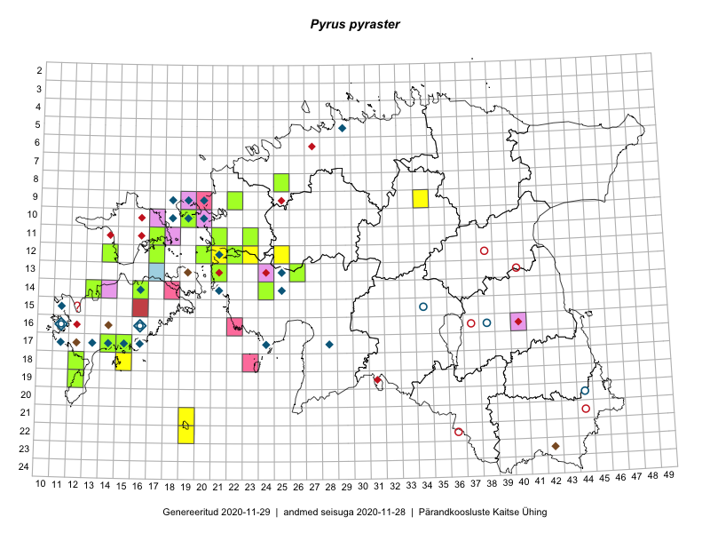

Pyrus pyraster
Uuendatud: 2016-12-01
Kaardile koondatud taksonid: Pyrus pyraster (L.) Burgsd.

Kaart põhineb 16 kirjel.
Viited andmebaasikirjetele
- Tiit Hallikma, Toomas Kukk: 2015-07-22: 05-49: ala
- Ott Luuk, Elle Roosaluste, Jaak-Albert Metsoja: 2015-06-16: 18-15: ala
- Eeva-Maria Jeletsky, Tarmo Niitla: 2015-06-21: 12-17: ala
- Jana-Maria Habicht, Ester Valdvee: 2015-07-25: 09-34: GPS punkt
- Oliver Parrest: 2015-05-29: 21-19: ala
- Oliver Parrest: 2015-05-29: 22-19: ala
- Aat Sarv: 2015-07-30: 12-25: ala
- Mari Metsoja, Jaak-Albert Metsoja: 2015-05-31: 08-25: ala
- Karin Kikas, Elle Rajandu: 2015-07-21: 14-18: GPS punkt
- Oliver Parrest: 2015-05-29: 22-19: GPS punkt
- Oliver Parrest: 2015-05-29: 21-19: GPS punkt
- Tiit Hallikma, Ott Luuk: 2016-05-14: 12-23: GPS punkt
- Aat Sarv, Maret Gerz: 2016-07-06: 11-23: ala
- Meeli Mesipuu, Toomas Kukk, Johannes Kõdar: 2016-08-11: 17-15: ala
- Meeli Mesipuu, Maret Gerz: 2015-08-25: 12-20: ala
- Jaak-Albert Metsoja, Mari Metsoja: 2015-05-31: 08-25: GPS punkt